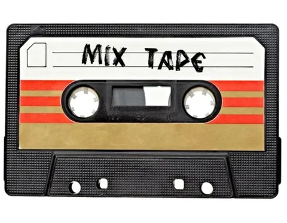

Недавно я как раз ворчал на тему того, что без интернета мы становимся как без рук. А мы, как можно заметить, все чаще остаемся без сети. И вот маятник начинает свое движение в обратную сторону, но, как водится, уже с поправкой на случившийся прогресс.
То Алиса учится распознавать базовые команды локальной моделькой (без запроса в сеть).
То инерциальная навигация позволяет тебя вести в минуты отсутствия надежного сигнала со спутника (ну хоть не по солнцу и звездам, и на том спасибо).
И вот теперь Яндекс Музыка умеет играть оффлайн, притом даже не с кассеты.
Насколько я понял, работает это так - приложение заранее насасывает в кеш некоторый беклог треков "моей волны", а также загружает локально очень компактную, но тем не менее функциональную рекомендательную модельку, которая, как и раньше, реагирует на ваше поведение, подстраивая лайн-ап под предпочтения и ситуацию. Полагаю, утрамбовать модельку так, чтобы она легко скачивалась и шустро работала локально, было непросто. Ребята красавчики.
Ждем звонки по проводу (но с видео), кино на радиочастотах (но из каталога) и вызов такси по телефону (но с безналичной оплатой).
Improvise. Adapt. Overcome.
